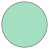

# mimetypes and mediatypes
import mimetypes

Trivia¶
what year were the words hypertext and hypermedia coined?
what race and gender was the person who coined these terms?
in the context of literate programming, show a display of code is the result of (a) tangling or (b) weaving code?
https://monoskop.org/images/b/be/Nelson_Ted_Literary_Machines_c1987_chs_0-1.pdf#page=9
https://en.m.wikipedia.org/wiki/Project_Xanadu#Original_17_rules
Multipurpose Internet Mail Extensions & Internet Assigned Numbers Authority¶
https://web.archive.org/web/20210624041208/https://developer.mozilla.org/en-US/docs/Web/HTTP/Basics_of_HTTP/MIME_types
import pandas as :panda:
import pandas as 🐼
🐼.read_csv("https://www.iana.org/assignments/markdown-variants/variants.csv")
| Identifier | Name | Expiration Date | References | |
|---|---|---|---|---|
| 0 | Original | Markdown | NaN | [RFC7763] |
| 1 | MultiMarkdown | MultiMarkdown | NaN | [RFC7764] |
| 2 | GFM | GitHub Flavored Markdown | NaN | [RFC7764] |
| 3 | pandoc | Pandoc | NaN | [RFC7764] |
| 4 | Fountain | Fountain | NaN | [RFC7764] |
| 5 | CommonMark | CommonMark | NaN | [RFC7764] |
| 6 | kramdown-rfc2629 | Markdown for RFCs | NaN | [RFC7764] |
| 7 | rfc7328 | Pandoc2rfc | NaN | [RFC7764] |
| 8 | Extra | Markdown Extra | NaN | [RFC7764] |
| 9 | SSW | Markdown for SSW | NaN | [Paulina_Ciupak] |
🐼.read_csv("https://www.iana.org/assignments/markdown-variants/variants.csv")
## `IPython and mimetypes`
* `IPython` uses mediatypes as an identifier for outputs
* the `data and metadata` must be `json` serializable
* the `data and metadata` are written to the cell outputs in the notebook file.
data, metadata = shell.display_formatter.format(Markdown("# a markdown display"))
return "data", data, "meta", metadata
'data'
{'text/plain': '<IPython.core.display.Markdown object>',
'text/markdown': '# a markdown display'}
'meta'
{}
if we prefer, we could use an `HTML` representation instead.
import markdown_it
md = markdown_it.MarkdownIt()
return shell.display_formatter.format(HTML(md.render("# my markdown")))
({'text/plain': '<IPython.core.display.HTML object>',
'text/html': '<h1>my markdown</h1>\n'},
{})
if we prefer, we could use an HTML representation instead.
import markdown_it
md = markdown_it.MarkdownIt()
return shell.display_formatter.format(HTML(md.render("# my markdown")))
in practice, we could present an even more complete mimebundle description that includes
both the `text/markdown` and `text/html` reprs
raw_mimetype = {
**shell.display_formatter.format(HTML(md.render("# my markdown")))[0],
**shell.display_formatter.format(Markdown("# my markdown"))[0]
}
display(
raw_mimetype, raw=True
)
raw_mimetype
my markdown
{'text/plain': '<IPython.core.display.Markdown object>',
'text/html': '<h1>my markdown</h1>\n',
'text/markdown': '# my markdown'}
in practice, we could present an even more complete mimebundle description that includes
both the text/markdown and text/html reprs
raw_mimetype = {
**shell.display_formatter.format(HTML(md.render("# my markdown")))[0],
**shell.display_formatter.format(Markdown("# my markdown"))[0]
}
display(
raw_mimetype, raw=True
)
raw_mimetype
## `mimetypes` that `IPython` supports
display_objects =\
list(pidgy.ns.get_display_types().values())
return display_objects
* {{"\n* ".join(shell.display_formatter.formatters)}}
[IPython.core.display.DisplayObject,
IPython.core.display.TextDisplayObject,
IPython.core.display.Pretty,
IPython.core.display.HTML,
IPython.core.display.Markdown,
IPython.core.display.Math,
IPython.core.display.Latex,
IPython.core.display.SVG,
IPython.core.display.ProgressBar,
IPython.core.display.JSON,
IPython.core.display.GeoJSON,
IPython.core.display.Javascript,
IPython.core.display.Image,
IPython.core.display.Video,
IPython.lib.display.Audio,
IPython.lib.display.Code]
`HTML` support means we have css support, and if we're feeling it we can customize our jupyter
HTML("""<style>
#jp-MainLogo::after {
content: "🖉";
animation: rotation 2s;
animation-iteration-count: 2
}
#jp-MainLogo svg {
display: none !important;
}
@keyframes rotation {
from {
transform: rotate(0deg);
}
to {
transform: rotate(359deg);
}
}
code {
font-weight: bold !important;
}
</style>""")
HTML support means we have css support, and if we're feeling it we can customize our jupyter
HTML("""<style>
#jp-MainLogo::after {
content: "🖉";
animation: rotation 2s;
animation-iteration-count: 2
}
#jp-MainLogo svg {
display: none !important;
}
@keyframes rotation {
from {
transform: rotate(0deg);
}
to {
transform: rotate(359deg);
}
}
code {
font-weight: bold !important;
}
</style>""")
Image("https://78.media.tumblr.com/87ca82e7d98150fdcb073b2e7a7f8aa1/tumblr_inline_mir2kvE5Ny1qz4rgp.gif")
<IPython.core.display.Image object>
Image("https://78.media.tumblr.com/87ca82e7d98150fdcb073b2e7a7f8aa1/tumblr_inline_mir2kvE5Ny1qz4rgp.gif")
`IFrame` requires you define the height and width. in presentations IFrame's are a powerful to provide
context from elsewhere.
* some website won't embed, try the wayback machine
* use the mobile view if you can find one
IPython.display.IFrame("https://en.m.wikipedia.org/wiki/MIME", "100%", 600)
IFrame requires you define the height and width. in presentations IFrame's are a powerful to provide
context from elsewhere.
some website won't embed, try the wayback machine
use the mobile view if you can find one
IPython.display.IFrame("https://en.m.wikipedia.org/wiki/MIME", "100%", 600)
GeoJSON¶
pip install jupyterlab-geojson
from shapely import geometry as :triangular_ruler:
from shapely import geometry as 📐
https://web.archive.org/web/20210702141916/https://pypi.org/project/jupyterlab-geojson/
i’m struggling to get this thing working.
a = 📐.Point(1, 1).buffer(1.5)
b = 📐.Point(2, 1).buffer(1.5)
JSON(📐.mapping(a.difference(b)))
<IPython.core.display.JSON object>
a = 📐.Point(1, 1).buffer(1.5)
b = 📐.Point(2, 1).buffer(1.5)
JSON(📐.mapping(a.difference(b)))
#### :thinking_face: the `_repr_*_` protocol
```python
{{inspect.getsource(Code)}}
```
a._repr_svg_
<bound method BaseGeometry._repr_svg_ of <shapely.geometry.polygon.Polygon object at 0x7f7ce50bed50>>
a._repr_svg_
SVG(a._repr_svg_())

SVG(a._repr_svg_())
a vendor can choose to support their own custom displays using the _repr_*_ protocol
a
a
moor trivia¶
what
mimetypedoes amatplotlibplot produce?name an
IPythondisplay that doesn’t comply with IANA standards.
## conclusion
this presentation combines different medial forms to tell a story.
the effect of media can be felt across all of our senses if we allow it.
through the use of varying forms we can create multi-sensory experiences that leave
bigger impacts on our readers.